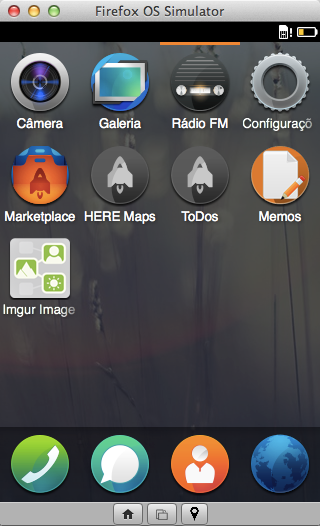

Основные понятия
Прежде, чем мы запачкаем руки и построим наше первое приложение, давайте узнаем некоторые основные понятия о разработке для Firefox OS. Во вступлении мы узнали, что приложения в Firefox OS, подобно веб-страницам, основаны на HTML5. Тем не менее, мы не объяснили, чем отличаются такие приложения от обычных веб-страниц.
Если мы воспользуемся нашими познаниями о других мобильных платформах, то заметим что нативное приложение в целом имеет следующее:
Имя и иконку, которую пользователь может нажать для запуска приложения. Доступ к системным службам и аппаратным возможностям.
Глядя на общую картину, приложение Firefox OS является простой веб-страницей, которая имеет иконку, имя и, как правило, способна работать в автономном режиме (зависит от того, как реализовано приложение). Все данные о приложении, такие как имя, иконка и другие определяются в файле манифеста приложения, который находится в центре внимания следующего раздела.
Манифест приложения
Манифест представляет собой файл в формате JSON, который описывает аспекты веб-приложения. Обычно этот файл называется manifest.webapp и располагается рядом с главным HTML-файлом, называемым, как правило, index.html.
Пример манифеста
{
"name": "Memos",
"version": "1.1",
"description": "A simple memo taking app",
"launch_path": "/index.html",
"permissions": {
"storage": {
"description": "Required for storing and retrieving notes."
}
},
"developer": {
"name": "Andre Garzia",
"url": "http://andregarzia.com"
},
"icons": {
"60": "/style/icons/icon_60.png",
"128": "/style/icons/icon_128.png"
}
}Выше мы видим манифест приложения под названием Memos. Среди прочего он описывает, кто создал приложение, какие иконки задействовать, как называется приложение, какой файл используется для запуска приложения (в данном случае это index.html), какой доступ к оборудованию требуется приложению и др. Этот файл использует Firefox OS для добавления приложения на главный экран устройства, а также Firefox Marketplace для отображения приложения в каталоге, как видно на рисунке ниже.

Приложение Memos в Firefox Marketplace
Обратите внимание, как информация из манифеста применяется системой для добавления приложения на главный экран, как это видно на следующем скриншоте.

Memos в симуляторе
Собрав воедино свой HTML, CSS, JavaScript и файл манифеста вы получите приложение готовое работать на Firefox OS. Временно перенесёмся из нашего раздела об основных понятиях и узнаем больше о типах приложений.
Типы приложений
Firefox OS в настоящее время имеет два типа приложений: размещённые и упакованные — хотя в будущем доступных типов может стать и больше (например, пользовательские клавиатуры и приложения, позволяющие создавать другие системные сервисы).
Размещённые приложения. Размещаются на веб-сервере подобно обычным веб-сайтам. Это означает, что когда пользователь запускает такое приложение, его содержимое загружается с удалённого сервера (или из кэша, если таковой имеется).
Упакованные приложения. Распространяются в виде zip-файла и копируются на устройство при установке. Когда пользователь запускает такое приложение, его содержимое загружается из архива вместо удалённого сервера.
Плюсы и минусы есть у обоих типов. С одной стороны, размещённые приложения легче поддерживать, так как всё что вам нужно сделать, это сохранить файлы на вашем веб-сервере. При этом сложнее заставить их работать без сети, потому что это потребует использовать презираемый многими appcache. Размещённые приложения также ограничены в WebAPI, это означает, что они не могут делать всё, что может делать упакованное приложение.
С другой стороны, упакованные приложения всё своё содержимое хранят на устройстве, а значит, оно всегда доступно, даже когда пользователь находится не в сети (и таким образом обойтись без appcache). Они также могут получить доступ к чувствительным к безопасности WebAPI, которые не доступны для размещённых приложений. Обновление может быть немного болезненно, поскольку любые новые версии вы должны загрузить в Firefox Marketplace и после этого опять проходить процесс проверки, который может занять некоторое время.
Перед тем как выбрать, какой тип приложения создать, учтите следующее: если вам требуется продвинутый WebAPI, то вы должны использовать упакованное приложение. Но если ваше приложение прекрасно работает без доступа к любой продвинутой системной службе или к возможностям устройства, за исключением тех, которые уже имеются в браузере, то всегда выбирайте размещённое приложение. Нормально использовать упакованные приложения, если у вас нет места для его хостинга.
Выше я упомянул, что appcache, который иногда требуется для размещённых приложений, может быть проблематичным. Не волнуйтесь сильно, поскольку есть инструменты, позволяющие сделать генерацию и развёртывание appcache проще.
В этой книге мы будем строить упакованные приложения, так как это позволит нам исследовать возможности WebAPI. Тем не менее, большинство того, что мы узнаем относится и к размещённым приложениям. Если вы хотите узнать больше о дистрибуции размещённых приложений, посмотрите здесь.
Теперь, когда мы рассмотрели два типа приложений, поддерживаемые Firefox OS, давайте взглянем на разные уровни системного доступа, которые у них могут быть.
Уровни доступа безопасности
В Firefox OS есть три уровня безопасности, с каждым уровнем доступ к API повышается, относительно предыдущего уровня.
Обычный (он же Интернет). Это уровень по умолчанию для всех приложений. Данный уровень применяется к размещённым приложениям и упакованным приложениям, которые не объявили свойство типа в их файле манифеста. Такие приложения имеют доступ к общему API аналогично браузерам, но не имеют доступ к любому WebAPI от Mozilla.
Привилегированный. Этот тип приложения имеет доступ ко всем основным API, подобно браузеру Firefox, плюс некоторые дополнительные, такие как контакты и системные предупреждения. Только упакованные приложения могут быть привилегированными и должны быть подписаны цифровой подписью Firefox OS Marketplace.
Сертифицированный. По соображениям безопасности этот уровень доступен только Mozilla и её партнерам (например, производителям телефонов). Сертифицированные приложения могут получить доступ ко всем API, включая телефонную связь и многое другое. Примером сертифицированного приложения в Firefox OS служит приложение для совершения звонков.
Во время разработки у нас есть возможность получить доступ к привилегированному API без какого-либо специального разрешения от Mozilla. Но когда мы хотим распространять привилегированное приложение, то сначала нужно идти в Firefox Marketplace. Там код проверяется в рамках строгого процесса утверждения, и если всё хорошо, то получаете цифровую подпись. Она говорит пользователям Firefox OS что этому приложению разрешён доступ к уязвимому API.
На странице посвящённой WebAPI на Mozilla Developer Network мы можем видеть, какие API внедрены на каких платформах и какой уровень доступа необходим для использования каждого API.

Уровень доступа для API
Как мы можем видеть на рисунке выше, любое приложение может получить доступ к IndexedDB API и FileHandle API, но только привилегированные приложения могут получить доступ к Contacts API и Device Storage API.
Mozilla WebAPI
Firefox OS предоставляет нам API, который позволяет создавать приложения, по возможностям схожие с нативными приложениями на других платформах. Доступ к оборудованию и сервисам происходит через WebAPI. Чтобы узнать больше о списке доступных API для текущей версии Firefox OS посмотрите страницу WebAPI на Mozilla Wiki.
Давайте рассмотрим некоторые примеры кода, чтобы увидеть насколько легко использовать API. Не воспринимайте примеры в качестве полной документации о WebAPI, они являются просто маленьким образцом для понимания, как мы можем получить доступ к функциям устройства с помощью JavaScript.
Пример № 1. Звонки
Представьте, что у вас есть приложение, в котором необходимо сделать звонок с уже набранным телефонным номеров. Вы можете просто использовать следующий код.
Отправка номера телефона в приложение для звонков
var call = new MozActivity({
name: "dial",
data: {
number: "5555-9999"
}
});Этот код делает запрос к приложению для звонков для набора определённого номера. Обратите внимание, что в реальности не происходит звонка — пользователю нужно будет нажать кнопку вызова чтобы позвонить. Требование явного действия со стороны пользователя перед выполнением некоторых шагов происходит довольно часто. Это хороший шаблон безопасности, потому что он требует взаимодействия с пользователем через его согласие, прежде чем позволить чему-то случиться. Другие API, которые могут совершать звонки без вмешательства пользователя, доступны на более высоких уровнях доступа. Например, сертифицированные приложения могут совершать звонки без согласия. API, используемый в коде выше, называется «Web Activities» и доступен для всех приложений.
Посмотрите блог Mozilla для получения дополнительной информации о Web Activities.
Пример № 2. Сохранение контакта
Представьте, что у вашей компании есть внутренняя сеть и вы хотите обеспечить способ передачи контакта из сетевой адресной книги в адресную книгу телефона. Вы можете сделать это через Contacts API.
Сохранение контакта
var contact = new mozContact();
contact.init({name: "Odin"});
var request = navigator.mozContacts.save(contact);
request.onsuccess = function() {
// контакт успешно сохранён
};
request.onerror = function() {
// возникла ошибка при попытке сохранить контакт
};Этот API создаёт объект с данными контакта и сохраняет его в адресную книгу телефона без вмешательства пользователя. Поскольку доступ к контактам имеет потенциальное значение для приватности, то API доступен только для привилегированных приложений. Написанный выше код создаёт объект в случае успеха и функцию обратного вызова для ошибки. Данный шаблон применяются во многих WebAPI.
Чтобы узнать больше об этом API прочитайте страницу о Contacts API на Mozilla Wiki.
Пример № 3. Изображение с камеры
Представьте, что вы создаёте приложение, которое применяет к фотографиям причудливые фильтры. Вы желаете добавить в ваше приложение кнопку, которая позволяет пользователю выбрать фотографию из альбома или с камеры.
Выбор изображения
var getphoto = new MozActivity({
name: "pick",
data: {
type: ["image/png", "image/jpg", "image/jpeg"]
}
});
getphoto.onsuccess = function () {
var img = document.createElement("img");
if (this.result.blob.type.indexOf("image") != -1) {
img.src = window.URL.createObjectURL(this.result.blob);
}
};
getphoto.onerror = function () {
// ошибка!
};Здесь мы видим еще один пример WebActivity. Эти процессы доступны для всех приложений. В данном конкретном фрагменте мы используем процесс pick и указываем MIME-типы файлов, которые хотим получить. Когда этот код выполняется, система показывает пользователю экран с запросом, откуда он хочет получить изображение (с камеры, из галереи, с рабочего стола). Если пользователь выбирает изображение, то срабатывает функция с успехом. Если пользователь отменяет операцию, то выполняется функция с ошибкой. На рисунке ниже мы видим диалог, который позволяет пользователю выбрать фотографию на устройстве.
Пример выбора изображения
Резюме
В этой главе мы увидели, что в отличие от обычных веб-страниц, размещённые и упакованные приложения полагаются на файл манифеста. Мы также увидели, что с точки зрения безопасности упакованные приложения делятся на «привилегированные» и «сертифицированные». Только привилегированные и сертифицированные приложения могут получить доступ к мощному набору Mozilla WebAPI. Более уязвимые WebAPI недоступны для размещённых приложений или обычных веб-страниц.
Теперь настало время запачкать наши руки и создать приложение!

Все материалы сайта доступны по лицензии Creative Commons «Attribution-NonCommercial» («Атрибуция — Некоммерческое использование») 4.0 Всемирная, если не указано иное.